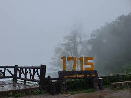

จุดชมวิว 1715
จุดที่สามารถชมพระอาทิตย์ขึ้นได้งดงามมากๆ
จุดที่สามารถชมพระอาทิตย์ขึ้นได้งดงามมากๆ
จุดชมวิวที่สามารถมองเห็นวิวทัวทัศน์ของธรรมชาติได้แบบ 360 องศา และในช่วงฤดูหนาวแบบนี้ในตอนเช้าจะได้สัมผัสกับลมเย็น
บริเวณจุดชมวิวอีกจุดหนึ่งมีพื้นที่เป็นลานกว้างตามสันเขา เหมาะสำหรับการพักผ่อนดูดาว